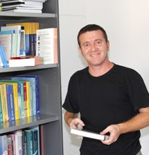
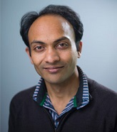
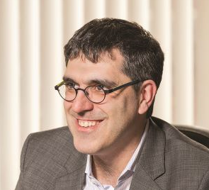

Professor Conesa will present "Implications of Increasing College Attainment for Aging in General Equilibrium" co-authored with Daniela Costa, Timothy J. Kehoe, Vegard M. Nygaard and Gajendran Raveendranathan. Recently he has worked on questions related to health and aging, mostly jointly with Tim Kehoe and various co-authors.

Dr. Singhania will present "A Simple Theory of the Aggregate Production Function" co-authored with Javier Birchenall and Kang Cao. His current research focuses on the valuation of mortgages and mortgage backed securities, valuation of assets under government guarantees, and properties of the aggregate production function.
Professor Menzio will present "Production and Learning in Teams" co-authored with Kyle Herkenhoff, Jeremy Lise and Gordon Phillips. Guido Menzio is a theoretical macroeconomist. His research focuses on the conceptual, and occasionally on the empirical, analysis of labor markets and other markets where finding trading partners is time-consuming. His writings on the secular and cyclical behavior of unemployment have been published in some of the most prestigious journals in economics, such as the Journal of Political Economy, the American Economic Review, the Review of Economic Studies and the Journal of Economic Theory.

Assistant Professor Neira will present "From Population Growth to Firm Demographics: Implications for Concentration, Entrepreneurship and the Labor Share", coauthored by Hugo Hopenhayn and Rish Singhania. His research interests are in macroeconomics and public finance. His current work is on firm dynamics and on optimal taxation with human capital.

Professor Eeckhout will present "Quantifying Market Power” co-authored with Jan De Loecker and Simon Mongey.
Jan Eeckhout is the professor of Economics at UPF Barcelona (ICREA-GSE) and University College London. He has teaching and research interests in macroeconomics, with a special emphasis on the labor market. He studies unemployment, labor market risk, skill diversity, inequality in cities, and the macroeconomic implications of market power.

Professor Marimon will present "A European Stability Fund as a Constrained Efficient Mechanism" co-authored by Arpad Abraham, Eva Carceles-Poveda, and Yan Liu. He is the Professor of Economics and Pierre Werner Chair at the European University Institute (on leave from the Universitat Pompeu Fabra). Chairman of the Barcelona Graduate School of Economics (2011 - ) and Research Fellow of CEPR and NBER. Former President of the Society of Economic Dynamics (2012 - 2015) and of the Spanish Economic Association (2004), Director of the Max Weber Programme of the EUI (2006 - 2013) and Chair of the European Economic Association Standing Committee on Research (2008 - 2011). He was Secretary of State for Science and Technology in Spain (2000 - 2002) and had served in several Expert Groups advising the European Commission on R&D and Higher Education policy. His research interests include Macroeconomics, Monetary Theory, Contract Theory, Learning Theory and Labor Theory, with a special emphasis on European economic issues. His research has been published in Econometrica, Journal of Political Economy, American Economic Review, Journal of Economic Theory, Review of Economic Dynamics, and other journals.
Professor Lochner will present "Parental Support, Savings and Student Loan Repayment” co-authored by Todd Stinebrickner and Utku Suleymanoglu.
Lance Lochner is the Director of Western’s Centre for Human Capital and Productivity, and
Canada Research Chair in Human Capital and Inequality.
His major fields of concentration are: labor economics, public economics, economics of education, and economics of crime.

Lawrence Christiano will present "Discouraging Deviant Behavior in Monetary
Economics" co-authored by Yuta Takahashi. Professor Christiano is the Alfred W. Chase Chair in Business Institutions, chairman of the Department of Economics and Professor of Economics at Northwestern University. Christiano's research has focused on macroeconomic theory, policy, and econometrics. Specifically, he has been concerned with how the government's monetary and fiscal instruments ought to respond to shocks over the business cycle. This research has two parts; one involves formulating and estimating an empirically plausible model of the macroeconomy, and the second involves developing economic concepts and computational methods for determining optimal policy in an equilibrium model.

Professor Fernandez-Villaverde will present, "Can Currency Competiton Work?" co-authored by Daniel Sanches (Federal Reserve Bank of Philadelphia). Jesús Fernández-Villaverde currently serves as Director of Graduate Studies in the Economics Department. He is a Visiting Professor at University of Oxford, Visiting Scholar at the Federal Reserve Banks of Chicago and Philadelphia and the Bank of Spain, Advisor to the Hoover Institution at Stanford University’s Regulation and Rule of Law Initiative, and a member of the National Bureau of Economic Research, and the Center for Economic Policy Research and ADEMU. His research interests are in the formulation of dynamic equilibrium models, their efficient computation, and their estimation.
Peter J. Klenow - Professor of Economics at Stanford University.
December 11, 2018 at 4:15 pm in North Hall 2111
Professor Klenow
will present, "A Global View of Creative Destruction" by Chang-Tai Hsieh (University of Chicago), Peter J. Klenow (Stanford University) , and Ishan Nath (University of Chicago).
Pete Klenow received his Ph.D. from Stanford University, where he is currently Landau Professor of Economics and the Gordon and Betty Moore Fellow at SIEPR. He is also a Research Associate of the National Bureau of Economic Research, for whom he organizes conferences on Economic Growth. He is a consultant to the Federal Reserve Banks of San Francisco and Minneapolis. He is currently an Associate Editor for the Quarterly Journal of Economics and Econometrica, and previously served on the Board of Editors of the American Economic Review. He has an ongoing Intergovernmental Personnel Assignment with the U.S. Bureau of Labor Statistics. Klenow specializes in macroeconomics, with emphasis on prices, productivity and economic growth.
Nick Pretnar, who'll be visiting LAEF from CMU will present, "Why Do Income Effects Exist?: Structural Change with Micro Foundations". His research focusses on consumption/savings behavior particularly how behavioral tendencies at microeconomic household level impact broader, macroeconomic trends. Currently, his research is bifurcated, focussing on how individual savings rates can be improved by financial services innovations, and how today’s consumption/savings behavior may have future generational welfare implications as society skews older.